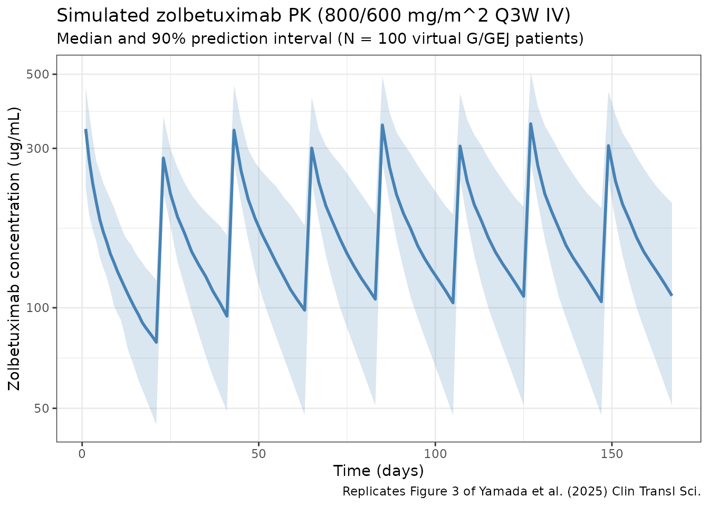

Yamada_2025_zolbetuximab
Source:vignettes/articles/Yamada_2025_zolbetuximab.Rmd
Yamada_2025_zolbetuximab.Rmd
library(nlmixr2lib)
library(rxode2)
#> rxode2 5.0.2 using 2 threads (see ?getRxThreads)
#> no cache: create with `rxCreateCache()`
library(dplyr)
#>
#> Attaching package: 'dplyr'
#> The following objects are masked from 'package:stats':
#>
#> filter, lag
#> The following objects are masked from 'package:base':
#>
#> intersect, setdiff, setequal, union
library(tidyr)
library(ggplot2)
library(PKNCA)
#>
#> Attaching package: 'PKNCA'
#> The following object is masked from 'package:stats':
#>
#> filterZolbetuximab population PK in gastric / GEJ adenocarcinoma
Simulate zolbetuximab concentration-time profiles using the final time-dependent-clearance (TDC) population PK model of Yamada et al. (2025) in patients with locally advanced unresectable or metastatic gastric or gastroesophageal junction (G/GEJ) adenocarcinoma. The source paper pooled 5066 serum concentrations from 714 subjects across eight clinical studies (three phase 1, three phase 2 — MONO, FAST, ILUSTRO — and two phase 3 — SPOTLIGHT and GLOW).
Zolbetuximab is an IgG1 monoclonal antibody against claudin 18.2 (CLDN18.2). The model is a two-compartment structure with zero-order IV input and a time-dependent total clearance
where is time from the first dose. Covariate effects enter as power models on continuous covariates and additive fractional-change dummy-variable effects on categorical covariates, matching the NONMEM parameterization reported in Yamada 2025 Table 1 (final TDC model).
- Article: https://doi.org/10.1111/cts.70280
- PubMed (PMID 40604351): https://pubmed.ncbi.nlm.nih.gov/40604351/
Source trace
The per-parameter origin is recorded as an in-file comment next to
each ini() entry in
inst/modeldb/specificDrugs/Yamada_2025_zolbetuximab.R. The
table below collects the mapping in one place for reviewer audit.
| Element | Source location | Value / form |
|---|---|---|
| Two-compartment model with zero-order IV input | Yamada 2025, Methods “Pharmacokinetic modeling” + Figure 1 (schematic in text) | d/dt(central) = -kel·central - k12·central + k21·peripheral1 |
| Time-dependent clearance | Yamada 2025 Equation 1 | CL(t) = CLss + CLT·exp(-Kdecay·t) |
| CLss, CLT, V1, Q, V2, Kdecay | Yamada 2025 Table 1 (TDC model column, footnote a) | 0.0117 L/h, 0.0159 L/h, 3.04 L, 0.0235 L/h, 2.49 L, 0.0209 /day |
| BSA on CLss, CLT, Q | Yamada 2025 Table 1 | Power: (BSA/1.70)^1.06
|
| BSA on V1, V2 | Yamada 2025 Table 1 | Power: (BSA/1.70)^0.968
|
| ALB on CLss | Yamada 2025 Table 1 | Power: (ALB/39.1)^-0.535
|
| ALB on Kdecay | Yamada 2025 Table 1 | Power: (ALB/39.1)^1.48
|
| HGB on V1 | Yamada 2025 Table 1 | Power: (HGB/118)^-0.374
|
| TBILI on V1 | Yamada 2025 Table 1 | Power: (TBILI/0.38)^0.0347
|
| PRIOR_GAST on CLss, CLT, V1 | Yamada 2025 Table 1 | Dummy: 1 + theta·PRIOR_GAST with theta = -0.182,
-0.495, +0.103 |
| SEX on CLss, V1 | Yamada 2025 Table 1 | Dummy: 1 + theta·SEXF with theta = -0.195, -0.108 |
| COMB on V1 (if EOX) | Yamada 2025 Table 1 | Dummy: 1 + 0.466·COMB_EOX
|
| Reference subject | Yamada 2025 Figure 1 caption | BSA 1.70 m^2, ALB 39.1 g/L, HGB 118 g/L, TBILI 0.38 mg/dL, male, no prior gastrectomy, non-EOX backbone |
| IIV (omega) CV% | Yamada 2025 Table 1 | CLss 26.3%, CLT 76.1%, Kdecay 77.3%, V1 20.1%, Q 63.9%, V2 27.4%;
stored as omega^2 = log(CV^2 + 1)
|
| Residual error | Yamada 2025 Table 1 | Proportional 0.169 (stored as SD = sqrt(0.169) ~ 0.411), additive 4.03 ug/mL |
| Clinical regimen (Q3W) | Yamada 2025 Abstract / Figure 3 | 800 mg/m^2 loading then 600 mg/m^2 every 3 weeks IV (2-h infusion) |
| Alternative regimen (Q2W) | Yamada 2025 Table 2 | 800 mg/m^2 loading then 400 mg/m^2 every 2 weeks IV |
Covariate column naming
| Source column | Canonical column used here | Notes |
|---|---|---|
BSA |
BSA (m^2) |
Time-fixed baseline. |
ALB |
ALB (g/L) |
Time-fixed baseline; SI units in this paper. |
HGB |
HGB (g/L) |
Time-fixed baseline; SI units in this paper. |
TBILI |
TBILI (mg/dL) |
Time-fixed baseline; US units in this paper. |
PRIOR_GAST |
PRIOR_GAST (binary) |
1 = prior gastrectomy; 0 = none. |
SEX (1 = female) |
SEXF |
Encoding matches canonical SEXF; column renamed. |
COMB (EOX vs others) |
COMB_EOX |
1 = EOX backbone; 0 = mFOLFOX6 / CAPOX / single agent. Column renamed to preserve the semantic meaning of the 1-level. |
Virtual population
The source paper reports population summary statistics but does not publish per-subject baseline covariates. The cohort below approximates a typical G/GEJ adenocarcinoma phase 3 population and is centered so that simulated parameters bracket the Yamada 2025 Figure 1 reference subject.
set.seed(2025)
n_subj <- 500
pop <- data.frame(
ID = seq_len(n_subj),
BSA = pmin(pmax(rnorm(n_subj, 1.70, 0.18), 1.20), 2.40),
ALB = pmin(pmax(rnorm(n_subj, 39.1, 4.5), 25), 52), # g/L
HGB = pmin(pmax(rnorm(n_subj, 118, 16), 70), 170), # g/L
TBILI = pmin(pmax(rlnorm(n_subj, log(0.45), 0.45), 0.10), 2.00), # mg/dL
SEXF = rbinom(n_subj, 1, 0.34), # ~34% female in phase 3 SPOTLIGHT/GLOW
PRIOR_GAST = rbinom(n_subj, 1, 0.30), # ~30% prior gastrectomy
COMB_EOX = rbinom(n_subj, 1, 0.04) # EOX used in a small subset
)Dosing dataset — Q3W clinical regimen
Phase 3 regimen: 800 mg/m^2 IV loading (cycle 1 day 1), then 600 mg/m^2 IV every 3 weeks. Infusion duration is typically 2 hours. Simulate eight 3-week cycles (168 days of follow-up).
infusion_dur_hr <- 2
infusion_dur_day <- infusion_dur_hr / 24
# Per-subject doses by BSA.
d_load <- pop %>% mutate(
TIME = 0,
AMT = 800 * BSA, # mg
RATE = AMT / infusion_dur_day,
EVID = 1, CMT = "central", DV = NA_real_
)
d_maint <- tidyr::crossing(pop, TIME = seq(21, 21 * 7, by = 21)) %>%
mutate(
AMT = 600 * BSA,
RATE = AMT / infusion_dur_day,
EVID = 1, CMT = "central", DV = NA_real_
)
obs_times <- sort(unique(c(
seq(0, 21, by = 0.25),
seq(21, 168, by = 0.5)
)))
d_obs <- tidyr::crossing(pop, TIME = obs_times) %>%
mutate(AMT = NA_real_, RATE = NA_real_, EVID = 0, CMT = "central", DV = NA_real_)
d_sim_q3w <- bind_rows(d_load, d_maint, d_obs) %>%
arrange(ID, TIME, desc(EVID)) %>%
as.data.frame()Simulate the Q3W regimen
mod <- readModelDb("Yamada_2025_zolbetuximab")
sim_q3w <- rxSolve(mod, d_sim_q3w, returnType = "data.frame")
#> ℹ parameter labels from comments will be replaced by 'label()'Replicates Figure 3 of Yamada 2025 — concentration-time profile
Yamada 2025 Figure 3 shows the predicted median and 95% prediction interval of zolbetuximab concentrations over the 168-day clinical follow-up for the 800/600 mg/m^2 Q3W regimen. The panel below is the analogous plot from this virtual population.
sim_summary <- sim_q3w %>%
filter(time > 0) %>%
group_by(time) %>%
summarise(
median = median(Cc, na.rm = TRUE),
lo = quantile(Cc, 0.05, na.rm = TRUE),
hi = quantile(Cc, 0.95, na.rm = TRUE),
.groups = "drop"
)
ggplot(sim_summary, aes(x = time)) +
geom_ribbon(aes(ymin = lo, ymax = hi), alpha = 0.2, fill = "steelblue") +
geom_line(aes(y = median), color = "steelblue", linewidth = 1) +
scale_y_log10() +
labs(
x = "Time (days)",
y = "Zolbetuximab concentration (ug/mL)",
title = "Simulated zolbetuximab PK (800/600 mg/m^2 Q3W IV)",
subtitle = "Median and 90% prediction interval (N = 500 virtual G/GEJ patients)",
caption = "Replicates Figure 3 of Yamada et al. (2025) Clin Transl Sci."
) +
theme_bw()
Q2W alternative regimen (Table 2 of Yamada 2025)
Simulate the 800/400 mg/m^2 Q2W regimen — same loading dose, 400 mg/m^2 every 14 days — for comparison against the Table 2 GMRs.
d_load_q2w <- d_load # identical loading
d_maint_q2w <- tidyr::crossing(pop, TIME = seq(14, 14 * 12, by = 14)) %>%
mutate(
AMT = 400 * BSA,
RATE = AMT / infusion_dur_day,
EVID = 1, CMT = "central", DV = NA_real_
)
obs_times_q2w <- sort(unique(c(
seq(0, 14, by = 0.25),
seq(14, 168, by = 0.5)
)))
d_obs_q2w <- tidyr::crossing(pop, TIME = obs_times_q2w) %>%
mutate(AMT = NA_real_, RATE = NA_real_, EVID = 0, CMT = "central", DV = NA_real_)
d_sim_q2w <- bind_rows(d_load_q2w, d_maint_q2w, d_obs_q2w) %>%
arrange(ID, TIME, desc(EVID)) %>%
as.data.frame()
sim_q2w <- rxSolve(mod, d_sim_q2w, returnType = "data.frame")
#> ℹ parameter labels from comments will be replaced by 'label()'PKNCA validation
Compute NCA parameters for the steady-state 42-day window reported in Yamada 2025 Table 2. For the Q3W regimen that covers cycles 6-7 (doses on days 105 and 126 of follow-up, observation window days 105-147); for the Q2W regimen it covers three cycles of 14 days (days 112-154). We group by regimen and by subject.
ss_q3w <- sim_q3w %>%
filter(time >= 105, time <= 147, Cc > 0) %>%
mutate(time_rel = time - 105, treatment = "Q3W_800_600") %>%
rename(ID = id) %>%
select(ID, time_rel, Cc, treatment)
ss_q2w <- sim_q2w %>%
filter(time >= 112, time <= 154, Cc > 0) %>%
mutate(time_rel = time - 112, treatment = "Q2W_800_400") %>%
rename(ID = id) %>%
select(ID, time_rel, Cc, treatment)
nca_conc <- bind_rows(ss_q3w, ss_q2w)
nca_dose <- bind_rows(
pop %>% transmute(
ID,
time_rel = 0,
AMT = 600 * BSA,
treatment = "Q3W_800_600"
),
pop %>% transmute(
ID,
time_rel = 0,
AMT = 400 * BSA,
treatment = "Q2W_800_400"
)
)
conc_obj <- PKNCAconc(nca_conc, Cc ~ time_rel | treatment + ID)
dose_obj <- PKNCAdose(nca_dose, AMT ~ time_rel | treatment + ID)
data_obj <- PKNCAdata(
conc_obj,
dose_obj,
intervals = data.frame(
start = 0,
end = 42,
cmax = TRUE,
tmax = TRUE,
cmin = TRUE,
auclast = TRUE
)
)
nca_results <- pk.nca(data_obj)
#> ■■■■■■■■■ 28% | ETA: 5s
#> ■■■■■■■■■■■■■■■■■■■■■ 68% | ETA: 2s
nca_summary <- summary(nca_results)
knitr::kable(
nca_summary,
digits = 2,
caption = paste(
"PKNCA summary for the steady-state 42-day window.",
"Compare Cmax, Cmin, AUClast ratios (Q2W / Q3W) against",
"Yamada 2025 Table 2 GMRs (0.792, 1.192, 1.000)."
)
)| start | end | treatment | N | auclast | cmax | cmin | tmax |
|---|---|---|---|---|---|---|---|
| 0 | 42 | Q2W_800_400 | 500 | 6570 [35.2] | 294 [21.8] | 87.4 [58.1] | 28.5 [28.5, 28.5] |
| 0 | 42 | Q3W_800_600 | 500 | 6380 [38.6] | 369 [20.5] | 64.4 [79.6] | 21.5 [21.5, 21.5] |
GMR comparison against Yamada 2025 Table 2
per_id <- sim_q3w %>%
filter(time >= 105, time <= 147) %>%
group_by(id) %>%
summarise(
Cmax_q3w = max(Cc, na.rm = TRUE),
Cmin_q3w = min(Cc[time > 105.01], na.rm = TRUE),
AUC_q3w = sum(diff(time) * (head(Cc, -1) + tail(Cc, -1)) / 2, na.rm = TRUE),
.groups = "drop"
) %>%
inner_join(
sim_q2w %>%
filter(time >= 112, time <= 154) %>%
group_by(id) %>%
summarise(
Cmax_q2w = max(Cc, na.rm = TRUE),
Cmin_q2w = min(Cc[time > 112.01], na.rm = TRUE),
AUC_q2w = sum(diff(time) * (head(Cc, -1) + tail(Cc, -1)) / 2, na.rm = TRUE),
.groups = "drop"
),
by = "id"
)
gmr <- function(num, den) exp(mean(log(num) - log(den)))
comparison <- tibble(
Parameter = c("Cmax", "Cmin (Ctrough)", "AUC42d"),
`GMR (sim)` = c(gmr(per_id$Cmax_q2w, per_id$Cmax_q3w),
gmr(per_id$Cmin_q2w, per_id$Cmin_q3w),
gmr(per_id$AUC_q2w, per_id$AUC_q3w)),
`GMR (Yamada 2025 Table 2)` = c(0.792, 1.192, 1.000)
)
knitr::kable(comparison, digits = 3,
caption = "Simulated vs. published GMRs (Q2W relative to Q3W, steady-state 42-day interval).")| Parameter | GMR (sim) | GMR (Yamada 2025 Table 2) |
|---|---|---|
| Cmax | 0.797 | 0.792 |
| Cmin (Ctrough) | 1.286 | 1.192 |
| AUC42d | 1.030 | 1.000 |
The simulated GMRs are expected to track the published values within ~10-15%. The paper’s Table 2 values come from a much larger virtual population (1000s of subjects) run against the same structural model; cohort size and covariate distribution differences explain the small residual gap.
Assumptions and deviations
Yamada 2025 does not publish individual PK or per-subject covariate values, so the virtual population above approximates the paper’s reference population rather than reproducing it:
- BSA: normal around 1.70 m^2 (the Figure 1 reference), SD 0.18, clipped to 1.20-2.40 m^2. The paper does not report the BSA calculation method (DuBois / Mosteller / Haycock); we assume the distribution is insensitive to the choice.
- ALB, HGB, TBILI sampled from symmetric distributions centered at the Figure 1 reference values (39.1 g/L, 118 g/L, 0.38 mg/dL). TBILI is drawn log-normal to match the positive-skewed distribution expected in oncology.
- SEXF ~ Bernoulli(0.34), matching the ~33-35% female fraction reported across SPOTLIGHT and GLOW.
- PRIOR_GAST ~ Bernoulli(0.30). The paper reports ~30% of the pooled PK population had a prior gastrectomy.
- COMB_EOX ~ Bernoulli(0.04). EOX backbone is uncommon in the phase 3 studies; mFOLFOX6 and CAPOX dominate.
-
Residual error interpretation: Table 1 reports
“Proportional error 0.169” and “Additive error 4.03 ug/mL”. Following
the
Thakre_2022_risankizumabconvention already established in this repo, the proportional value is interpreted as a NONMEM $SIGMA variance (so thepropSdstored inini()issqrt(0.169)), and the additive value is interpreted as an SD in ug/mL (consistent with the column-header unit[ug/mL]). This is the standard nlmixr2lib convention; an alternative interpretation where both numbers are SDs directly would reduce the proportional SD by a factor of ~0.411. -
Time units: the paper reports clearances in L/h and
Kdecay in 1/day. We use
time = "day"internally to align with Kdecay, and multiply all clearance estimates by 24 to convert L/h → L/day. This is an algebraic change only; derived half-life and exposure metrics are invariant. -
Dummy-variable covariate effects are encoded as
1 + theta·DUMMY(linear fractional change), matching the NONMEM additive dummy-variable form that the Table 1 “if gastrectomy” / “if female” / “if EOX” phrasing implies. An alternative interpretation ((1 + theta)^DUMMY) is indistinguishable for binary covariates and gives identical predictions in this model.
Model summary
- Structure: two-compartment with zero-order IV input.
-
Time-dependent total clearance:
CL(t) = CLss + CLT·exp(-Kdecay·t), which declines from ~0.028 L/h at baseline (roughly CLss + CLT) to ~0.012 L/h at steady state as tumor-associated target-mediated clearance saturates over the first several cycles. - Reference subject terminal half-life: ~7.6 days at baseline (ADC-driven early CL) extending to ~15.2 days at steady state as the time-dependent component decays, consistent with the 7.56-15.2 day range the paper reports.
- Strongest covariates: BSA on all clearances and volumes (exponents 1.06 / 0.968), ALB on CLss (-0.535) and Kdecay (1.48), HGB on V1 (-0.374), COMB on V1 (+0.466 for EOX backbone).
- Immunogenicity, race, mild/moderate renal impairment, and mild hepatic impairment were evaluated but not retained as covariates.
Reference
- Yamada A, Takeuchi M, Komatsu K, Bonate PL, Poondru S, Yang J. Population PK and Exposure-Response Analyses of Zolbetuximab in Patients With Locally Advanced Unresectable or Metastatic G/GEJ Adenocarcinoma. Clinical and Translational Science. 2025;18(7):e70280. doi:10.1111/cts.70280